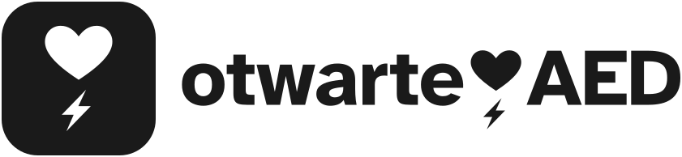
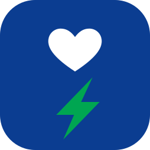
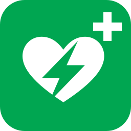
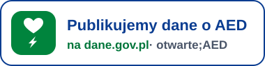
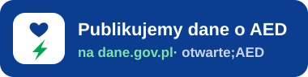
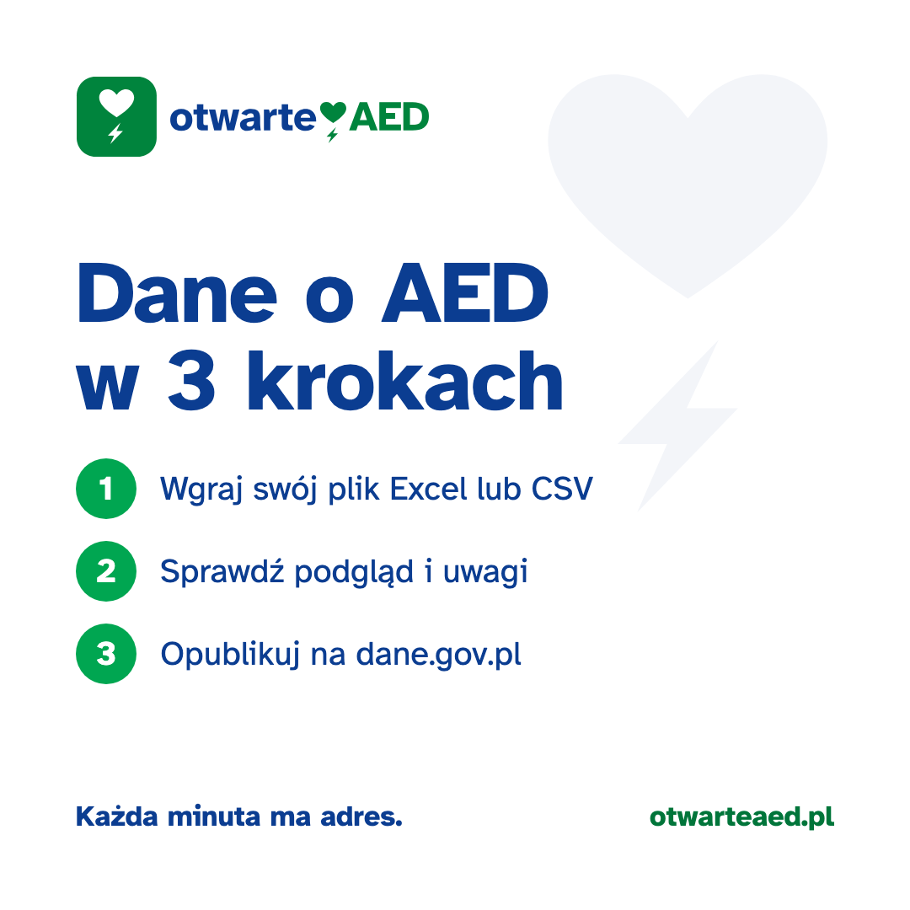

Każda minuta ma adres.
Księga znaku kampanii otwarte AED. Wersja 1.0, 21 listopada 2026.
otwarteaed.pl · gdzieaed.plMisja AED — Dane na ratunek, HackNation 2026
Księga znaku kampanii otwarte AED. Wersja 1.0, 21 listopada 2026.
Średnik oddziela kolumny w pliku CSV, czyli w formacie, w którym gminy, straż pożarna i instytucje publikują dane o defibrylatorach na dane.gov.pl.
W naszym znaku kropka średnika jest sercem, a jego ogonek błyskawicą wyładowania AED: dane i ratunek to jeden znak.
Granat i zieleń nawiązują do cyfrowych usług publicznych i do zieleni oznakowania AED, a prosta geometria czyta się nawet w rozmiarze ikony.
Hasło „Każda minuta ma adres.” przypomina, że przy zatrzymaniu krążenia liczy się czas, a czas zależy od tego, czy wiemy, gdzie jest defibrylator.


Kolory statusów na mapie (tylko w danych, nie w znaku): zielony #00A651 — dostępny całodobowo albo brak danych (przyjęto: dostępny), żółty #E6B800 — ograniczone godziny, pomarańczowy #E8590C — prywatny.
* Wartości CMYK przeliczone z RGB, orientacyjne. Przed drukiem nakładu potwierdzić wydrukiem próbnym.
Jednostka x to ¼ wysokości sygnetu. Wokół znaku zostaw co najmniej x wolnej przestrzeni z każdej strony: bez tekstu, krawędzi i innych grafik.
Minimalne rozmiary, przy których znak jest czytelny:
Krój pisma: Atkinson Hyperlegible (Braille Institute, licencja SIL OFL), zaprojektowany z myślą o czytelności dla osób słabowidzących. Napis znaku jest pogrubiony, a średnik zawsze zielony.
Zatrzymanie krążenia? Dzwoń 112. Mapa: gdzieaed.pl
Naklejka A6 dla firm, urzędów i spółdzielni: kilka sekund uwagi, jedna informacja, gdzie jest najbliższe AED. Generator na gdzieaed.pl wypełnia ją danymi z otwarte AED.
Hasło kampanii dla dysponentów: „Pokaż swój AED. Opublikuj dane na dane.gov.pl.” Dane muszą pochodzić od dysponenta, więc kampania nie zachęca do zgłaszania cudzych urządzeń.

Na naklejkach wskazujących AED używamy układu międzynarodowego znaku AED (serce z błyskawicą i krzyż), narysowanego kształtami znaku otwarte AED. Dzięki temu znak jest rozpoznawalny od pierwszego spojrzenia i pasuje do kampanii.


Odznakę „Publikujemy dane o AED na dane.gov.pl” umieszcza dysponent, który opublikował na portalu dane o swoich defibrylatorach. Jest widocznym dowodem udziału w akcji i zachęca kolejne gminy i instytucje.
Zasady: odznaka linkuje do zbioru dysponenta na dane.gov.pl; minimalna szerokość 180 px albo 45 mm; pole ochronne jak dla znaku (x = ¼ wysokości sygnetu); nie zmieniamy tekstu ani kolorów.

